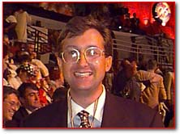
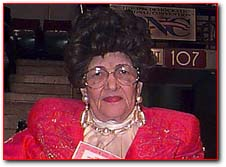

Sheron Rose Ethridge is a delegate from Alabama who was married this past July 20th. She and her husband Steve originally planned on taking a Caribbean cruise after their wedding. Instead, they changed their plans, cancelled their reservations and honeymooned at the 1996 Democratic National Convention.


Through it all, the committee worked every Saturday and in warmer months, every evening at restoring the Church. But, like other churches around the country, last August 16, after being fully restored, the church burnt to the ground. Over the past year, the committee -- which never disbanded -- has been working to raise funds to rebuild the church.
President Clinton visited her area and spoke at Mt. Zion Church. Ammie is an ardent supporter and credits Clinton with motivating the Senate to stiffen the penalties for desecrating a holy place.
Paid for by Clinton/Gore ’96 General Committee, Inc.